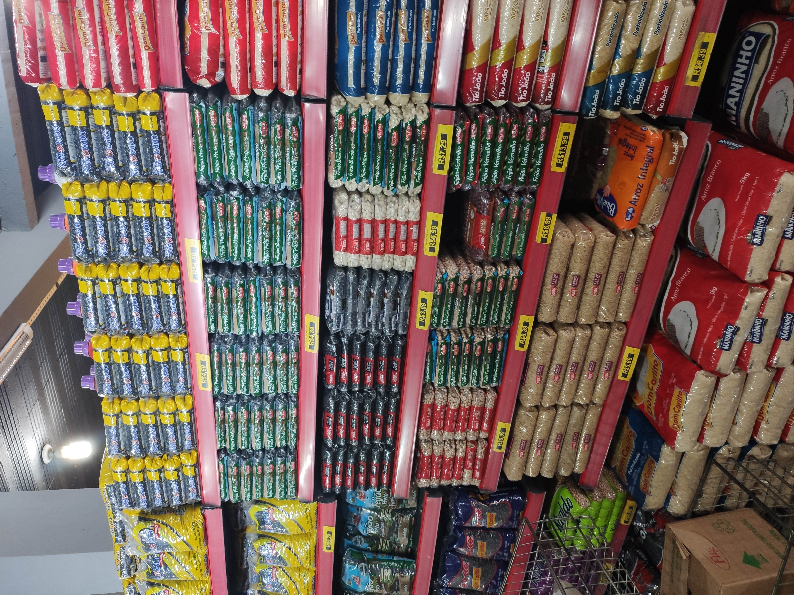

08 de Julho de 2023.
3 anos de Supereconômico!! 👏🎉.

O meu primeiro emprego! minha primeira oportunidade. O emprego que me levou de menino para homem adulto, aprendi tantas coisas, cresci eticamente, profissionalmente e também como ser humano. Conheci pessoas incrÃveis durante minha trajetória no mercado, escutei tanta coisa, tantas risadas, piadas, comentários, abraços, cumprimentos e também choros! kkk. Foi incrÃvel ter feito parte deste projeto maravilhoso do meu tio. Que deus abençoe todos. Uns abraços especiais para minha maravilhosa mãe que sempre me apoiou. Ao meu tio que me deu minha primeira oportunidade, ao meu grande amigo Marlon por ter sempre me ajudado e me ensinado tanta coisa.